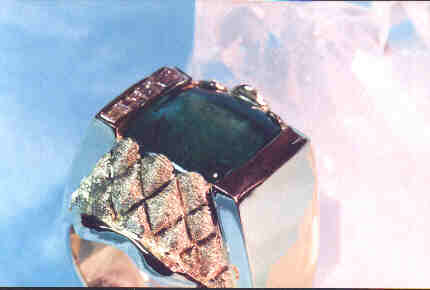
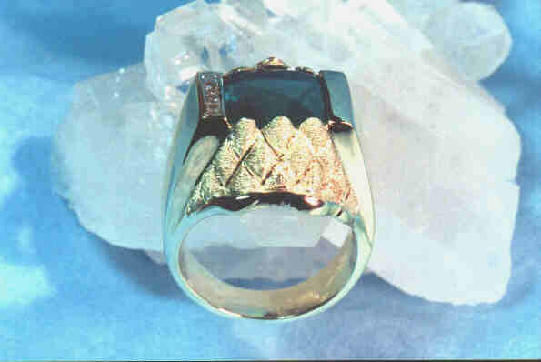
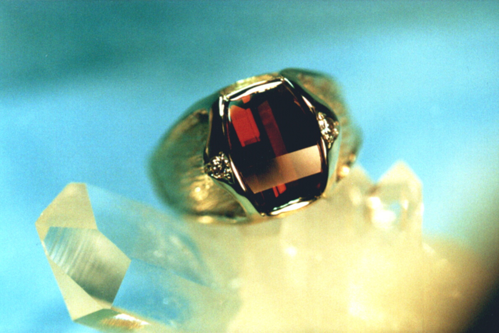
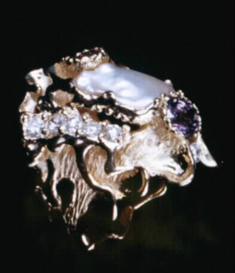
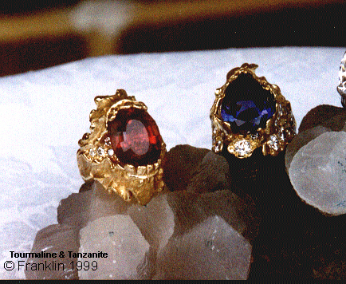
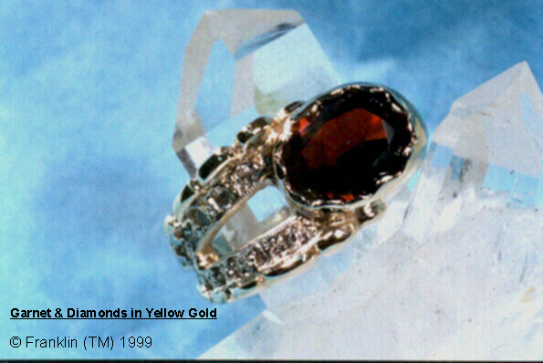
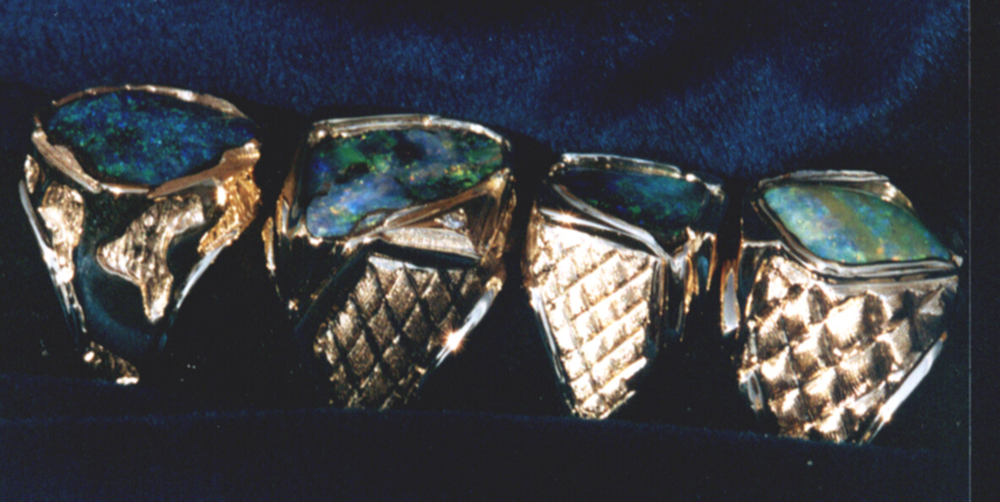

- home - Art - Designs By Elias Alias - Colored Stone Jewelry Page Two -
~
Colored Stone Jewelry - Page One
~
The 18 karat yellow gold finger ring below holds an 8.4 Carat cabochon-cut Columbian emerald with a deep pavilion. I used a quilted texture pattern on the ends of the ring to contrast the high-polished shoulders and shank of the ring. One top bar holds straight baguette diamonds. The quilted details atop each end of the ring were used to set the emerald. The ring is photographed on a cluster of quartz crystals against a blue background.


~
Below we see a roll-top faceted garnet from Mozambique in yellow gold with two side diamonds as a gentleman's finger ring.

~
Below is a baroque Lake Biwa natural pearl flanked by a lavender sapphire and a pink tourmaline (which is not included in this angle) with F-VVS mele diamonds as a lady's finger ring featuring textures and high-polished 18 karat yellow gold..

~
Next we see two finger rings. On the left is an oval-cut red Tourmaline weighing approximately 8 carats. On the right is a 10 carat Tanzanite. Both are in 18 karat yellow gold with pave F-VVS round diamonds. Both rings are ladies fancy rings. The Tourmaline ring weighs over one-half ounce and the Tanzanite ring weighs slightly over one ounce.

~
Here we see an oval Almandine Garnet with round mele diamonds in yellow gold as a lady's finger ring.

~
Below are four Gents finger rings in 18 karat yellow gold with custom-cut Australian Boulder Opals.

All jewels shown were designed, created, executed, and copyrighted by Elias Alias circa 1990s and renewed 2007. Wax models for some of the pieces pictured on this page are in the Wax Models page.
~
- home - Art - Designs by Elias Alias - Colored Stone Jewelry Page Two -
~